Curves lines have several uses in music notation. Curves lines may be drawn above or below segments of a composition (slurs or phrase markings). A curved line may also connect two note values across a bar-line (ties).
A slurSlurs are curved lines above or below notes showing connection. is a performance indication in music, used to instruct the performer to connect those notes encompassed by the slur. A wind player will not articulate (“tongue”) these notes, a string player will play them all in one bow stroke, a pianist will strive to connect the notes fluidly.
Figure 1.41 Slurs
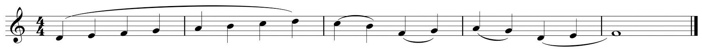Slurs should be drawn connecting or encompassing note-heads. A common mistake by students is to draw slurs connecting stems. The exception to this general practice occurs when a slur is drawn over note stems that change direction. (See measure 1 of Figure 1.41 "Slurs".)
A phrase markingPhrase markings are curved lines over segments of music showing complete ideas or statements. is also a performance indication. A composer will encase a passage of music within a phrase marking to indicate a complete idea, a complete musical statement. This does not have any effect upon articulation: many times slurs may be found within the bounds of a phrase marking. Phrase markings are placed above the staff.
Figure 1.42 Phrase Markings

At times a durational value exceeds the bounds of a measure in a given time signature: the note value occupies more “beats” than the measure will allow. To accommodate this, we use a tieA tie is a short slur used to connect notes across a bar line., a short curved line connecting one durational value to another in the succeeding measure.
Figure 1.43 Ties

Dynamic markings indicate relative degrees of volume in a composition or a passage of music. Articulations are common symbols (and their associated terms) directing how notes are performed. These are listed in Chapter 19 "Appendix A: Common Musical Terms" with other common musical terms.
The basic dynamic markings are:
Some composers expand this range, adding dynamic markings using three or four “p’s” or three or four “f’s.”
Figure 1.44 Basic Dynamic Markings

Composers employ special markings that serve as performance “indicators,” denoting how notes are to be performed. Those commonly used are listed below.
Staccato: originally interpreted as “half the written value,” it has come to mean “detached” (not necessarily “short”).
Figure 1.45 Staccato Examples
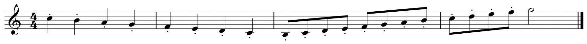Legato: properly Tenuto (“held”), meaning held to full value and implying connection to the following note value.
Figure 1.46 Legato Examples

Marcato: (“marked”), accented.
Figure 1.47 Marcato Examples
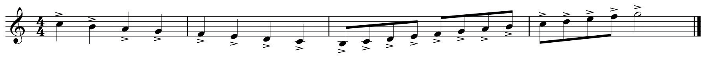Marcatisimo: heavily accented.
Figure 1.48 Marcatissimo Examples
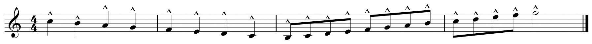Martelé: in writing for strings, this marking is used to denote a very heavy accent, heavy bow pressure being achieved by the use of “downbow.”
Figure 1.49 Martelé Examples
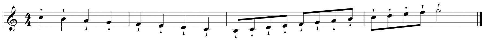Review the fundamental attributes defining simple and compound meter. Simple meter divides the fundamental pulse into two portions, compound meter into three. At times it is desirable (or necessary) to insert a compound division into simple time, or a simple division into compound time. This process is called artificial divisionInserting a compound division into simple time (triplets) or simple divisions into compound time (duplet)., commonly called tuplets.
In a simple meter, inserting a compound division (artificially dividing the beat into three equal portions) is called a triplet and is written thus:
Figure 1.50 Triplets in Simple Meter
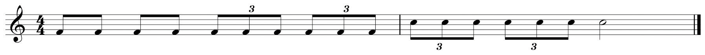Conversely, inserting a simple division into a compound meter (artificially dividing the beat unto two equal portions) is called a duplet, and is written thus:
Figure 1.51 Duplets in Compound Meter
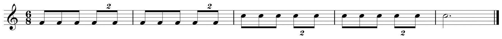A triplet may occur across multiple beats in Simple Meter, called a super-triplet. In Compound Meter, a larger tuplet across multiple beats may occur.
Figure 1.52 Super-triplet, Tuplet
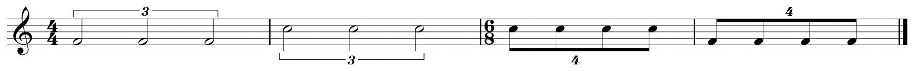Composers have employed many other tuplet figures, inserting larger artificial divisions within beats or groups of beats.
Figure 1.53 Examples of Larger Tuplets
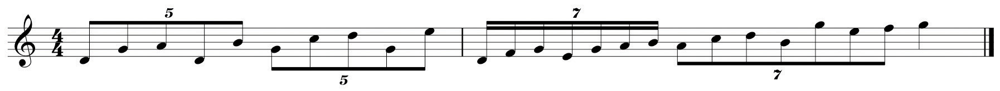Artificial division is used as a process for making rigid time and beat division much more fluid and irregular. This technique is especially prevalent in music from the 19th Century onwards.
Syncopation is another common rhythmic device. The simplest definition of syncopation is:
Here are some typical rhythmic patterns demonstrating this device:
Figure 1.54 Examples of Syncopation Patterns

Asymmetrical meter has become a very common device in the composer’s arsenal. Often called “Odd-meters” (a slang term) because the top number of such time signatures is an “odd number,” these are time signatures that mix simple and compound beats within a measure or pulse grouping. Common examples are:
Triple meters and their multiples are not included in this category generally. Often these meters are treated in the same manner that we treat compound meters, that is, the written time signature represents First Division. So, for example, might be grouped as two eighth notes plus three eighth notes or the reverse.
Figure 1.55 Division Groupings
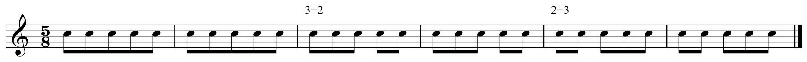A seven-meter might be grouped 2+2+3, 3+2+2, or 2+3+2, and so forth for other asymmetrical meters. It is possible to construct asymmetrical divisions from typical meters by irregular groupings. For example,
Figure 1.56 Other Meters and Sample Groupings

Until the 20th Century, there were relatively few examples of asymmetrical meter in the literature. A notable exception is the second movement of Tchaikovsky’s Sixth Symphony (Páthetique) (in 5).
See this link:
http://imslp.org/wiki/Symphony_No.6,_Op.74_(Tchaikovsky,_Pyotr_Ilyich)
Asymmetrical meter is a hallmark of 20th- and 21st-century music, in both classical and vernacular genre. Composers freely employed asymmetrical meters for entire segments and pieces or employed them incidentally as context demanded. Examples that come readily to mind include:
There are many other examples.
It became customary for 20th-century composers to mix asymmetrical meters as needed, their use dictated by phrasing, text rhythm, and so forth. Concluding our discussion of rhythm, we are fully prepared to enter the realm of pitch in the next chapter.
The student should understand:
Using the Time Signature Table, graph the following asymmetrical meters. List each written time signature in the First Division row, sum to find component Pulses, then provide one level of Subdivision.
| Pulse | |
| First Division | |
| Subdivisions |
| Pulse | |
| First Division | |
| Subdivisions |
| Pulse | |
| First Division | |
| Subdivisions |
| Pulse | |
| First Division | |
| Subdivisions |
List three possible division groupings for each of the following time signatures:
See example.
Figure 1.57 Asymmetrical Division Groupings
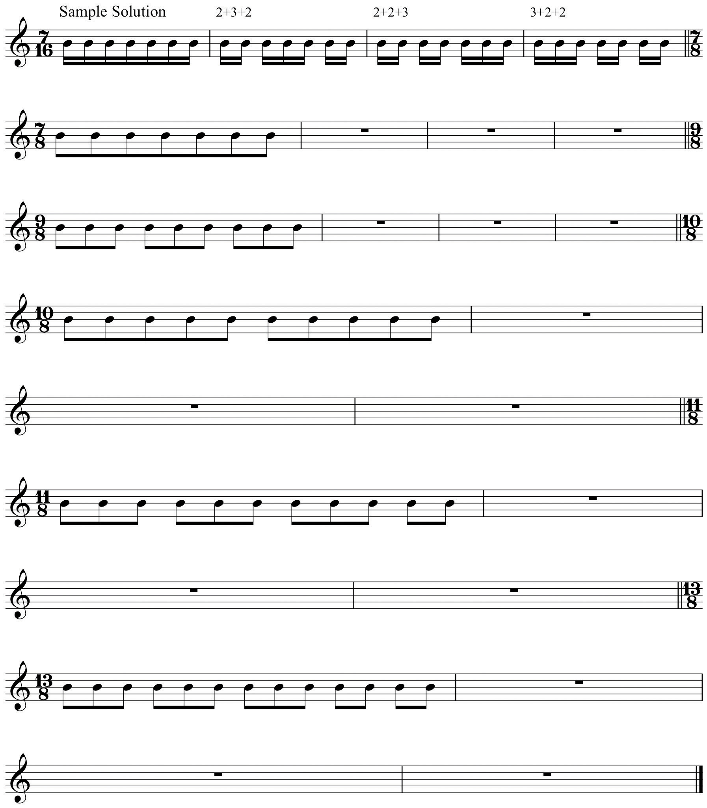Sum the divisions you’ve created in order to determine pulse values. See example.
Figure 1.58 Asymmetrical Pulse Values